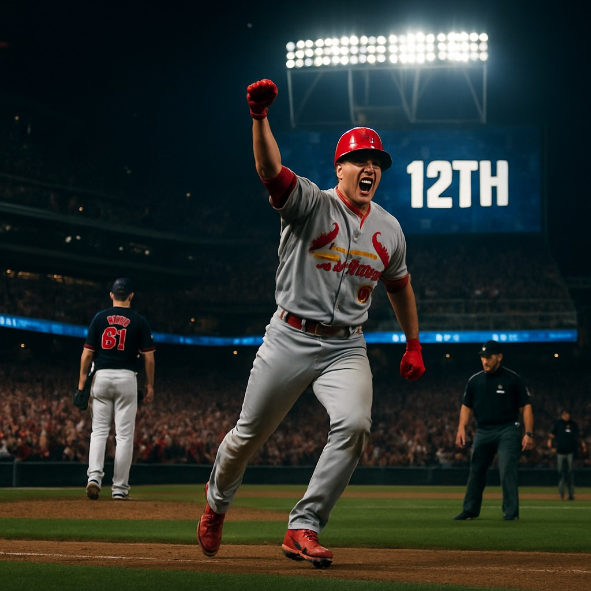

In a dramatic finish that defied pre-game expectations, the Minnesota Twins fell to the St. Louis Cardinals 9-6 in a thrilling 12-inning contest at Target Field on Friday night. The game was a rollercoaster of momentum shifts, with both teams trading blows throughout the contest.
A Battle of Pitching and Defense
The Twins entered the game as slight favorites according to the Sports Select spread line, which had them listed at -132 (-1.5) against the Cardinals, who were priced at +135. However, the game’s outcome underscored the unpredictability of MLB, especially in extended contests.
The Cardinals' pitching staff, led by starter Michael Wacha, kept the Twins’ potent offense in check early. Wacha allowed just two runs over six innings before being replaced by a deep bullpen that held strong through the later innings. The Twins' bats managed to stay close, but their inability to capitalize on scoring opportunities in the later innings ultimately cost them.
Key Plays That Defined the Game
The Twins took an early lead in the second inning, scoring three runs off Cardinals starter Jack Flaherty. However, the Cardinals responded with a four-run fifth inning to take control. In the bottom of the ninth, the Twins tied the game on a solo home run by Royce Lewis, sending it into extra innings.
The Cardinals’ rally in the 12th inning proved decisive. With runners on first and second and no outs, a double by Nolan Arenado plated the go-ahead run, followed by a sacrifice fly that sealed the victory. The Twins’ bullpen struggled in the late innings, giving up crucial hits and walks that allowed the Cardinals to score twice in the frame.
Betting Takeaway
Despite the Cardinals’ win, the game's total of 9.5 runs was met with skepticism from bettors. The game went under the total of 9.5, finishing at 15 runs scored. The spread also favored the Twins slightly, but the outcome showed that even favorites can falter in a high-scoring affair.
This result highlights the importance of evaluating team form, bullpen reliability, and the ability to perform under pressure—especially when facing a resilient opponent like the Cardinals. While the odds were in favor of the Twins, their execution in the clutch left much to be desired.
Looking Ahead
Both teams now head into their next series with different trajectories. The Twins, despite the loss, remain in contention in the wild-card race, while the Cardinals continue their push toward the postseason. The Cardinals’ resilience in this game could be a sign of their growing confidence as they enter a crucial stretch of the season.